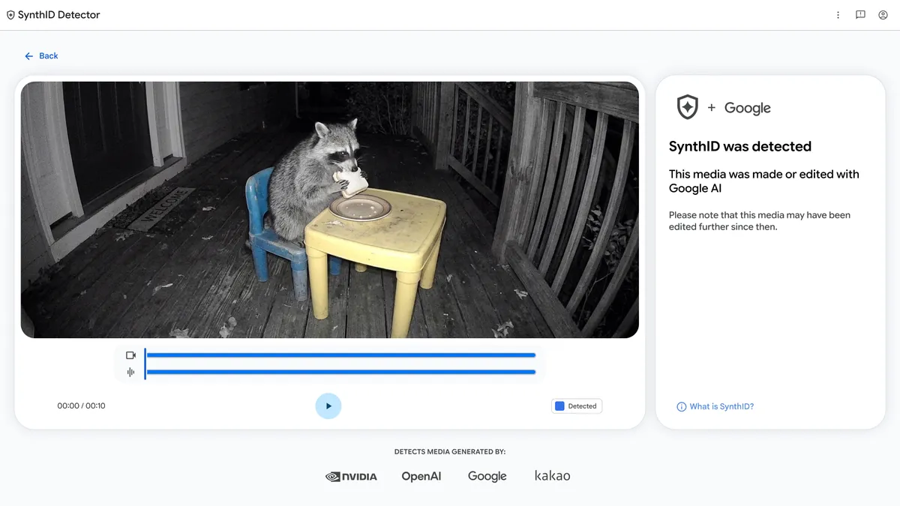
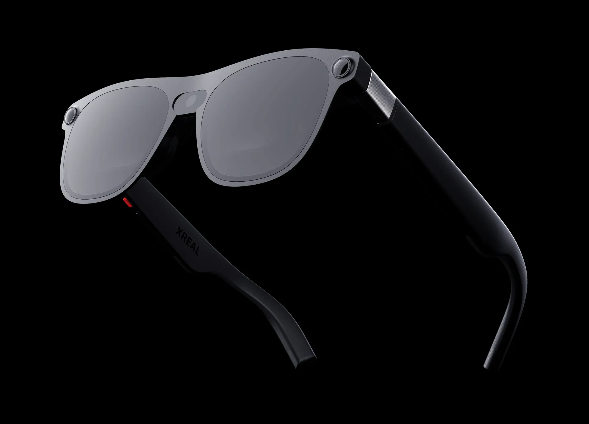
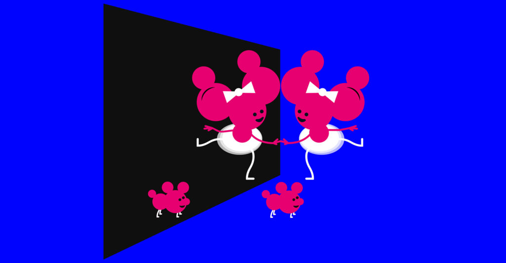

科技產品 T1
ChatGPT 開始推出互動式回覆，圖表與操作元件不再只是靜態附圖
發佈時間
OpenAI／ChatGPT Intelligent UI
ChatGPT 可依問題產生互動圖解、比較工具與計算器，讓讀者直接操作回覆內容。
- Plus、Pro、Business、Enterprise 自 10/7 開始推出；Free、Go 排定翌日開始，不代表所有帳戶同時開通。
- 系統能在思考或查詢期間先回覆、再補充結果；不是每個問題都會生成互動元件。
完整報告收合報告
事件背景與影響
問答介面正從文字輸出走向臨時生成的小工具，但互動呈現不等於內容必然正確。
事件與發佈依據
官方當日公告與 ChatGPT release notes 的 October 7 段落，屬 Chat 分頁的新介面推出。
收錄紀錄
最近 14 日未收錄這次介面變更；不同於已收錄的 Codex／Work 模型與音訊更新。
尚待確認
推出採分批方式；企業管理設定及個別帳戶可用性仍須確認，未替使用者帳戶實測。
相關實體與概念
ChatGPT、GPT-6、生成式介面、互動圖解
科技產品 T2
Anthropic 發布 Claude Haiku 5.5，擴充低成本模型的長上下文與推理控制
發佈時間
Anthropic／Claude Haiku 5.5
Haiku 新版面向大量、成本敏感的工作，可在 Claude 與開發平台使用。
- 官方文件列出 100 萬 token 上下文、最高 12.8 萬 token 輸出，並提供 effort 控制。
- 10 萬 token 內的提示，API 每百萬 token 輸入 US$0.10、輸出 US$0.50；較長提示適用不同級距。
完整報告收合報告
事件背景與影響
小模型的價格、上下文長度與推理成本控制，會影響企業是否能把代理功能用在高頻工作。
事件與發佈依據
Claude 官方 release notes 的 October 7「Claude Haiku 5.5 launch」段落。
收錄紀錄
最近 14 日未收錄 Haiku 5.5；不是 Sonnet 5.5 或 Cowork 的重刊。
尚待確認
官方產品頁部分圖像／標題仍寫 4.5，正文及當日 release notes 為 5.5。新 tokenizer 與長提示級距會影響實際帳單；效能描述為廠商聲明。
相關實體與概念
Anthropic、Claude、API、長上下文、推理預算
科技產品 T3
微軟開放 Surface Laptop Ultra 與 RTX Spark Dev Box 預購，分別安排十月與十一月供貨
發佈時間
Microsoft／Surface Laptop Ultra、Surface RTX Spark Dev Box
RTX Spark 高階 Surface 裝置公布起價與供貨安排，將本機 AI 開發帶入筆電及桌上型設備。
- Surface Laptop Ultra 官方起價 US$2,599，預定 10/16 開始出貨。
- Dev Box 售價 US$5,999，首波在美國 Microsoft.com 預購，十一月供貨，不能套用筆電的 10/16 日期。
完整報告收合報告
事件背景與影響
硬體從展示走到可訂購階段，但高記憶體容量與售價仍使它主要面向專業需求。
事件與發佈依據
微軟 10/7 預購公告；今年較早的首次展示僅為背景。
收錄紀錄
最近 14 日無此預購事件；不同於已收錄的小尺寸 Surface 機種。
尚待確認
價格為公告市場起價，不是台灣售價；商務通路配置不同。廠商 AI 算力數字不等於所有模型的實際速度。
相關實體與概念
Microsoft、Surface、NVIDIA RTX Spark、本機 AI、統一記憶體
科技產品 T4
Windows MXC 正式可用，為本機 AI 代理提供受控執行環境
發佈時間
Microsoft／Windows Model Execution Containers（MXC）
Windows 11 的代理執行環境可限制檔案、網路等存取邊界，支援本機與雲端混合工作。
- 官方列出 Codex、Copilot、OpenClaw、Replit、LM Studio 等支援工具；不同工具的整合狀態不完全相同。
- Copilot 未來的個人脈絡與操作能力仍以授權為前提，不能全部當成今日已全面開放。
完整報告收合報告
事件背景與影響
讓代理執行指令時有可管理的範圍，是把工具從展示帶入日常工作的重要條件。
事件與發佈依據
Windows 官方 10/7 混合智慧公告明載 MXC generally available。
收錄紀錄
最近 14 日未收錄 MXC 正式可用事件；硬體預購另列，不重複計算。
尚待確認
受控容器不是無風險保證；部署條件、工具版本及未來合作項目須個別確認。
相關實體與概念
Windows 11、MXC、沙箱、權限管理、混合推論
科技產品 T5

官方介面示意，非本站效能測試。 Google DeepMind
Google 向全球開放 SynthID Detector 英文網站，讓一般使用者查驗支援的 AI 水印
發佈時間
Google DeepMind／SynthID Detector
一般使用者可上傳影音或圖片，檢查是否帶有支援平台嵌入的 SynthID 水印。
- 網站先提供英文、全球存取，支援 Google、OpenAI、NVIDIA、Kakao 等合作來源。
- Apple 支援仍標示即將加入；不是所有 AI 工具與媒體格式都能查驗。
完整報告收合報告
事件背景與影響
公開查驗工具能補充內容溯源，但不能把單一偵測結果當作真假內容的總判決。
事件與發佈依據
官方當日公告將原本受限的偵測工具開放予一般使用者。
收錄紀錄
最近 14 日未收錄這次公開存取變更；Live Avatar 的水印使用不是同一事件。
尚待確認
沒有檢出支援水印不代表內容由真人製作；影像處理與非合作平台內容仍有偵測限制。
相關實體與概念
SynthID、內容溯源、數位水印、AI 影音
科技產品 T6
Google 推出 Playground 實驗平台，讓美國成年使用者以提示建立與分享遊戲
發佈時間
Google／Playground
Playground 將提示詞生成、遊玩及分享放在瀏覽器內，先以實驗產品方式開放。
- 首波限定美國 18 歲以上；建立遊戲的權限及用量依 Google One 方案而異。
- 分享內容須經安全檢查；與 Unity Spark 的整合及後續測試仍屬未來安排。
完整報告收合報告
事件背景與影響
生成式遊戲的門檻降低，但平台的審查、付費層級與生成品質仍決定可用性。
事件與發佈依據
Google 10/7 實驗性遊戲平台公告。
收錄紀錄
最近 14 日無同一推出事件，不以其他生成式介面消息替代。
尚待確認
不是台灣全面可用產品，也未實測遊戲品質；不把未來 Unity 整合寫成正式上市功能。
相關實體與概念
Google One、生成式遊戲、Unity、內容審查
科技產品 T7

AURA 官方產品圖，非獨立實測。 XREAL
XREAL AURA 公布 US$1,279 起價，先讓預約者在四個市場購買
發佈時間
XREAL／AURA Android XR 眼鏡
有線 Android XR 眼鏡確認兩款容量與價格，先向付費預約者開放購買。
- 12GB／256GB 為 US$1,279；16GB／512GB 為 US$1,499。
- 首波美國、加拿大、日本、韓國；一般公開購買預計未來數週，官方以今年假期前交貨為目標。
完整報告收合報告
事件背景與影響
XR 裝置從預告走到實際交易階段；市場、購買資格及出貨時間仍須分開看待。
事件與發佈依據
公司新聞稿 10/7 08:00 美國東部夏令時間，即 12:00 UTC。
收錄紀錄
最近 14 日未收錄本次定價與預約者購買變更；不是較早的原型展示。
尚待確認
產品頁 FAQ 的舊市場列表與新版新聞稿不同，以有日期公告的首波市場為準；台灣上市與確切到貨日未確認。
相關實體與概念
XREAL、Android XR、空間運算、有線眼鏡
科技產品 T8
Cisco 公布 Webex Dialog 路線，預計明年第一季測試長期客服代理
發佈時間
Cisco／Webex Dialog
Dialog 要讓客服代理在對話結束後繼續處理工作，保留跨次互動的關係脈絡。
- Dialog beta 預期於 2027 日曆年第一季推出，不是今日正式上線。
- Cisco 同時介紹既有與未來合作功能，Claude Managed Agents 等整合不可混稱全部已可用。
完整報告收合報告
事件背景與影響
客服 AI 從單次對答走向長時間任務，企業更需要政策、權限及持續狀態管理。
事件與發佈依據
Cisco 新聞稿日期欄 2026-10-07 14:00 GMT，屬具體產品路線公告。
收錄紀錄
最近 14 日無同一 Dialog 路線事件；不把既有 Webex AI Agent 重新收錄。
尚待確認
時程為廠商預期，正式價格與最終功能仍待公布；持續脈絡也帶來資料保存與授權議題。
相關實體與概念
Cisco、Webex、長期代理、客服、企業治理
科技產品 T9
Google 釋出 EmbeddingGemma 2，讓文字、圖片及影音在裝置端共用搜尋向量
發佈時間
Google DeepMind／EmbeddingGemma 2
新模型把不同媒體映射到同一向量空間，供本機搜尋、檢索增強及分類使用。
- 全模態為 7.4 億參數，純文字／程式碼可只載入 2.7 億參數；權重採 Apache 2.0。
- 原生 768 維向量可縮至 128 維；縮短向量須一致處理查詢與文件，不能直接比較不同維度。
完整報告收合報告
事件背景與影響
不需先把影音轉成文字再檢索，可降低多模型串接的複雜度，但仍須驗證自身資料集品質。
事件與發佈依據
Google 10/6 launch 公告與同日開發者指南，權重已可下載。
收錄紀錄
窄化查詢與最近 14 日產品表均無同一第二代模型事件。
尚待確認
官方記憶體與效能結果依指定裝置、量化及測試條件，不代表所有手機相同；向量縮減可能犧牲召回品質。
相關實體與概念
Gemma、嵌入模型、多模態搜尋、RAG、端側運算
科技產品 T10
Gemini API 正式提供 Nano Banana 2.1，改善圖片編輯與全景比例生成
發佈時間
Google／Gemini Nano Banana 2.1
新圖片生成與對話式編輯模型正式可用，增加寬幅比例及多輪人物一致性等改善。
- 官方型號為 `gemini-nano-banana-2.1`，支援 1K／2K／4K 與 1:8、8:1 等比例。
- 舊 `gemini-3.1-flash-image` 已列為 deprecated；本次查到的官方 changelog 明寫尚未公布 shutdown date。
完整報告收合報告
事件背景與影響
開發者有新模型可遷移，但需要區分官方支援、廠商品質宣稱與第三方未確認的停用日期。
事件與發佈依據
Gemini API changelog 的 October 6 GA 段落，不以網路提前目擊或評測日期代替。
收錄紀錄
最近 14 日查無同一 2.1 正式發布事件，並核對同窗表；不是舊版 Nano Banana 的再次介紹。
尚待確認
部分第三方宣稱 10/29 關閉舊版，與本次官方段落不一致，未採用此日期；改善幅度仍須獨立實測。
相關實體與概念
Gemini API、圖片生成、對話式編輯、模型遷移
全球焦點 1
續報｜俄羅斯十月七日空襲烏克蘭，烏方通報二十五人死亡
發佈時間
烏克蘭官員稱新攻擊造成至少 25 人死亡，包括 5 名兒童，近百人受傷。
- 傷亡涵蓋基輔及普里盧基等地，數字為烏方統計。
- 早期報導死亡數較低，採截點前的較新彙整，不把更新時間視為新事件。
完整報告收合報告
事件背景與影響
城市與民用設施再受重創，凸顯防空及平民保護壓力。
事件與發佈依據
AP／News4Jax 首次發布 06:18:14 UTC；本次收錄的是 10/7 新一輪飛彈與無人機攻擊。
收錄紀錄
9/24 已收錄基輔先前空襲；今日新增為 10/7 多地攻擊及新的傷亡，不重刊昨天黑海油輪事件。
尚待確認
俄方聲稱打擊軍事及工業目標，烏方則通報住宅與平民受害；兩方說法不能互相取代。戰時傷亡可能修訂，不相加拼湊全國總數。
相關實體與概念
烏克蘭、俄羅斯、基輔、普里盧基、防空
全球焦點 2

手性鏡像概念示意，非事件現場照片。 © Johan Jarnestad / The Royal Swedish Academy of Sciences
諾貝爾化學獎授予 Kagan 與硤合憲三，表彰不對稱合成研究
發佈時間
Henri B. Kagan 與 Kenso Soai 因不對稱有機合成的非線性效應與自催化研究獲獎。
- 獎金 1,200 萬瑞典克朗由兩人平分。
- 1986、1995、2003 年的研究為獲獎背景，今天的新事件是正式頒獎決定。
完整報告收合報告
事件背景與影響
研究解釋如何偏向形成一種鏡像分子，對藥物合成與生命化學研究具有基礎影響。
事件與發佈依據
AP 首次發布 06:43:29 UTC；瑞典皇家科學院同日公布正式得主。
收錄紀錄
最近 14 日無此化學獎結果；與醫學獎、物理學獎是不同獎項。
尚待確認
表彰既有基礎發現，不代表今天上市新藥；不將科學應用前景當成臨床成果。
相關實體與概念
諾貝爾獎、Kagan、硤合憲三、手性、自催化
全球焦點 3
續報｜胡塞攻擊沙烏地機場，沙方通報三人死亡
發佈時間
胡塞宣布攻擊沙烏地機場，沙方稱三人死亡，區域衝突再波及民用交通設施。
- 攻擊聲明與沙方傷亡資訊分屬不同來源。
- 對目標、攔截及損害的描述不等於已獲獨立完整核實。
完整報告收合報告
事件背景與影響
機場受襲增加航空運輸與區域安全風險。
事件與發佈依據
AP／KSAT 原始發布欄 08:28:11 UTC；收錄 10/7 機場攻擊，非周年背景重刊。
收錄紀錄
10/4 已收錄胡塞對 Aramco 的攻擊聲明；本次新增阿卜哈與利雅德機場攻擊及傷亡，與 10/6 葉門地面戰況分開。
尚待確認
戰爭參與方聲明有立場差異；死亡數與攻擊成效仍可能更新，不將聲稱命中直接當成獨立驗證。
相關實體與概念
胡塞、沙烏地阿拉伯、阿卜哈、利雅德、航空安全
全球焦點 4
沖繩知事與高市早苗會面，要求強化駐日美軍紀律與減輕基地負擔
發佈時間
沖繩知事古謝玄太向日本首相高市早苗提出美軍紀律與地方基地負擔問題。
- 地方要求防止涉軍事件再發，並減輕基地集中的負擔。
- 今天收錄的是政府間會面，不把 10/3 逮捕或 10/6 限制措施重新當成今日事件。
完整報告收合報告
事件背景與影響
駐軍安全議題持續影響日美同盟與沖繩居民對中央政府的信任。
事件與發佈依據
AP 首次發布 04:59:50 UTC；新事件為 10/7 東京正式會面。
收錄紀錄
最近 14 日無此會面。較早美軍涉嫌犯罪、逮捕及活動限制僅列背景。
尚待確認
涉案指控尚非定罪；會面訴求不代表已形成具體基地移轉或司法改革決定。
相關實體與概念
沖繩、古謝玄太、高市早苗、駐日美軍、日美同盟
全球焦點 5
土耳其伊茲米爾市長加入艾爾段執政黨，改變反對派重鎮政治版圖
發佈時間
伊茲米爾市長 Cemil Tugay 加入正義與發展黨，先前已離開共和人民黨。
- 六月離黨是舊背景，今日入執政黨才是新增政治程序。
- 市議會仍由反對陣營掌握多數，不能稱整個城市已改由 AKP 全面控制。
完整報告收合報告
事件背景與影響
執政黨取得反對派象徵性城市的市長支持，但地方議會力量並未一併翻轉。
事件與發佈依據
AP 首次發布 10:45:24 UTC；10/7 入黨儀式為新事件。
收錄紀錄
最近 14 日無 Cemil Tugay 的這次轉黨事件。
尚待確認
這是市長轉黨而非新的民選結果；對後續預算與地方合作的影響仍待觀察。
相關實體與概念
土耳其、伊茲米爾、Cemil Tugay、AKP、CHP
全球焦點 6
緬甸軍方領導人抵達馬來西亞，遣返與移民安全議題引發關注
發佈時間
敏昂萊抵達吉隆坡，準備與馬方討論遣返問題，國際組織則關注返回者風險。
- 截點前已確認抵達；與安華的週四會談尚未發生，不能寫成已達協議。
- 先前約 1,500 人遣返引來批評，不計作今日新遣返人數。
完整報告收合報告
事件背景與影響
外交接觸與移民政策交織，影響緬甸流離失所者的安全及區域合作。
事件與發佈依據
AP／Bay News 9 顯示 10/7 11:54 美國東部時間；新事件為週三抵達。
收錄紀錄
最近 14 日未收錄此次訪馬；10/4 遣返為舊背景。
尚待確認
雙方會談結果尚未公布；政府對返回安全性的說法與人權團體疑慮不可互相取代。
相關實體與概念
緬甸、敏昂萊、馬來西亞、安華、遣返、人權
全球焦點 7
斯里蘭卡法院命前第一夫人拘留一週，調查慈善資金使用
發佈時間
Shiranthi Rajapaksa 涉慈善基金使用疑案，被法院命拘留一週。
- 調查涉及原用於醫療設備的捐款及銀行帳戶操作。
- 本次是羈押／調查程序，不是法院認定有罪。
完整報告收合報告
事件背景與影響
案件牽動前執政家族的法律責任與公眾對反貪程序的信任。
事件與發佈依據
AP 首次發布 15:35:15 UTC；同日司法拘留決定。
收錄紀錄
最近 14 日無此次拘留程序，不把長期家族爭議當成今日判決。
尚待確認
指控仍需司法審理；政治背景不等於能證明資金用途或犯罪成立。
相關實體與概念
斯里蘭卡、Rajapaksa 家族、慈善基金、反貪、司法
全球焦點 8
教宗良十四世開啟家庭牧靈檢討會議，檢視再婚信徒的實務處理
發佈時間
教宗召集會議，檢視方濟各《愛的喜樂》在家庭、離婚及民事再婚議題上的落實。
- 重點是檢視十年來的執行，不是已宣布重寫教義。
- 截點時會議才開始，不可稱已全面允許再婚信徒領聖體。
完整報告收合報告
事件背景與影響
天主教內部不同牧靈作法仍有爭議，會議結果可能影響後續指引。
事件與發佈依據
AP 首次發布 15:19:17 UTC；10/7 開啟為期一週的會議。
收錄紀錄
最近 14 日未收錄此次會議啟動；2016 年文件本身不是今日新規。
尚待確認
不同教區及教會派別的解讀仍有差異；會議最終摘要尚未出爐。
相關實體與概念
良十四世、梵蒂岡、方濟各、《愛的喜樂》、家庭牧靈
全球焦點 9
波蘭學校遭持刀攻擊九人受傷，警方拘捕嫌疑人
發佈時間
奧斯特羅文卡學校攻擊造成學生、教師及路人共九人受傷，嫌疑人被捕。
- 傷者包括五名學生、兩名教師及兩名路人。
- 初步通報無生命危險，但一人傷勢較重，傷情可能變動。
完整報告收合報告
事件背景與影響
案件暴露校園與周邊公共空間的安全風險，仍須等待動機與完整經過調查。
事件與發佈依據
AP 首次發布 10:32:01 UTC；事件發生在 10/7 當地上午。
收錄紀錄
最近 14 日無同一奧斯特羅文卡攻擊，不與其他城市威脅案合併。
尚待確認
作案動機仍未確認，不推論恐攻或精神疾病；拘捕不等於定罪。
相關實體與概念
波蘭、Ostrołęka、校園安全、警方調查
全球焦點 10
續報｜賓州公布麻疹累計一千零七十八例，新增登錄含多起較早感染
發佈時間
賓州今年累計 1,078 例、分布 41 郡；自 10/5 以來新增登錄 74 例，不代表同期全為新感染。
- 官方表示新增登錄中逾 40 人在兩週前已發病，更新不代表當前感染突然暴增。
- 累計住院 207 人、確認相關死亡 5 人；不是今日新增五人死亡。
完整報告收合報告
事件背景與影響
病例登錄與真正感染時間不同，公衛趨勢判讀須避免把遲報誤作突然爆發。
事件與發佈依據
Ars 首次發布 10/7 20:01:14 UTC；賓州衛生部 10/7 新統計公告為事件依據。
收錄紀錄
10/6 已收錄紐約麻疹緊急狀態並提及賓州背景；今日新增賓州官方跨千例統計與遲報說明，不重述紐約命令。
尚待確認
Ars 的本次疫情 1,066 例與官方全年 1,078 例屬不同口徑，並非相互矛盾；本文主要採官方全年數字。
相關實體與概念
Pennsylvania DOH、麻疹、遲報、公共衛生、累計統計
研究備註
時間、來源與後續追蹤
研究截點 2026-10-08 08:02:01（Asia/Taipei）
研究時間與範圍
研究截點：2026-10-08 08:02:01（Asia/Taipei）。全球新聞：2026-10-07 08:02:01 至 2026-10-08 08:02:01（Asia/Taipei）。科技產品：2026-09-24 08:02:01 至 2026-10-08 08:02:01（Asia/Taipei）。
後續追蹤 1
科技供應與權限：追蹤 ChatGPT 分批推出、AURA 公開購買及 Dialog beta，不把預期日期當完成。[OpenAI release notes](https://help.openai.com/en/articles/6825453-chatgpt-release-notes) [XREAL AURA](https://www.xreal.com/us/aura) [Webex Dialog](https://blog.webex.com/customer-experience/webexone-2026-disconnected-customer-interactions-one-continuous-relationship/)
後續追蹤 2
安全與統計：追蹤空襲傷亡修訂、機場運作及賓州遲報口徑。[AP／News4Jax](https://www.news4jax.com/news/world/2026/10/07/russian-missile-strike-in-ukraines-capital-kills-at-least-2/) [賓州 DOH](https://www.pa.gov/agencies/health/newsroom/pa-department-of-health-provides-statewide-update-on-measles-out9)